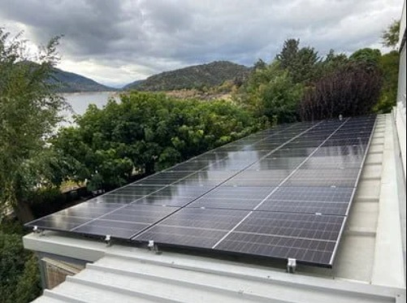

Somos un hotel sostenible
Minimizamos nuestro impacto sobre el medio ambiente y regeneramos nuestro entorno.
Minimizamos nuestro impacto sobre el medio ambiente y regeneramos nuestro entorno.
En Ávila, a orillas del Embalse de El Burguillo y frente a la Reserva Natural del Valle de Iruelas.
Senderismo, actividades acuáticas, paseos a caballo, bodegas. Conoce todo lo que nuestro entorno te ofrece
Somos un hotel rural donde parejas, familias, amigos y mascotas disfrutan en un ambiente cercano, natural y confortable. Estamos ubicados en un entorno privilegiado a orillas del embalse del Burguillo y frente a la Reserva Natural del Valle de Iruelas. Tenemos la certificación de Punto de Información de la Reserva, desde donde parten varias excursiones y se ofrecen actividades en contacto con la naturaleza. Nos gusta cuidar de nuestros huéspedes para que se sientan cómodos, en un ambiente alegre y desenfadado. Reservar tus vacaciones con nosotros o degustar cocina casera con productos locales de la zona en nuestro restaurante.